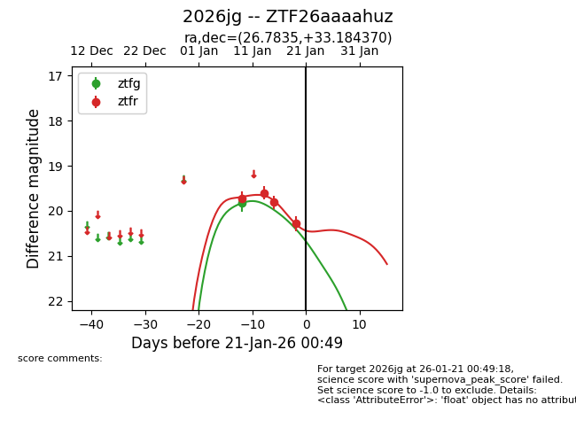
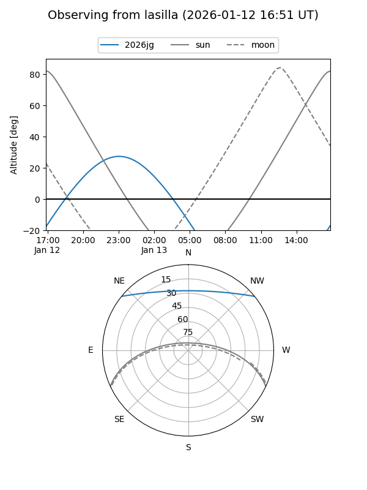
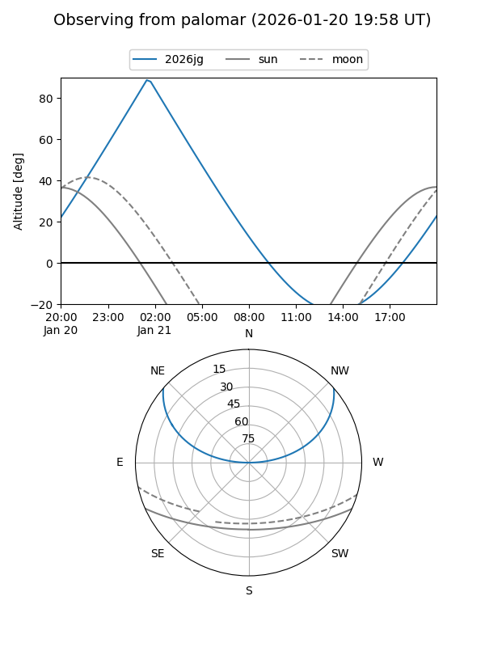
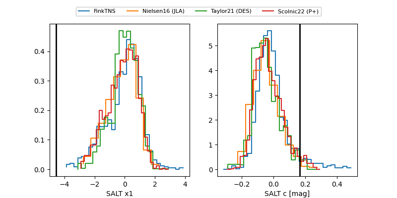

2026jg
Target 2026jg at 2026-01-15 20:10
Aliases and brokers:
FINK: link
Lasair: link
ALeRCE: link
TNS: link
YSE: link
alt names
ZTF26aaaahuz (ztf,fink_ztf)
2026jg (tns,yse)
Coordinates:
equatorial (ra, dec) = 26.7835,+33.18437
equatorial (HMS+DMS) = 01:47:08.03,+33:11:03.73
galactic (l, b) = (136.1483,-28.25397)
Flags:
Photometry:
last ztfg=19.83, ztfr=19.81
1 ztfg, 3 ztfr detections
Lightcurve

Visibility


Additional plots
